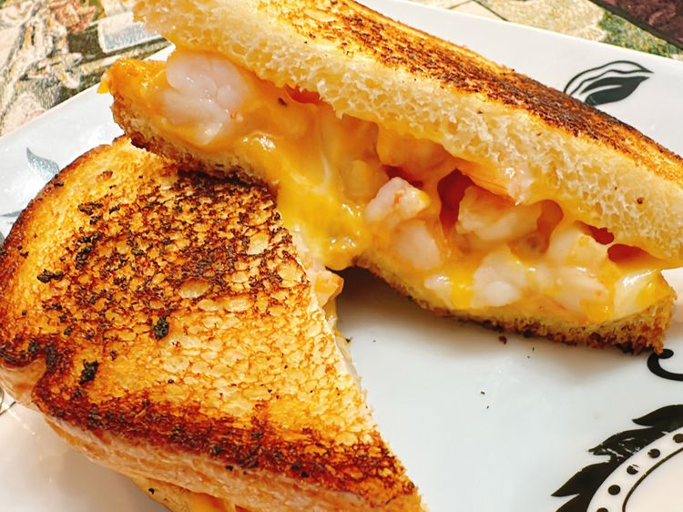

Home
Shrimp Grilled Cheese Sandwich

Credit: Allrecipes Magazine
Description
This shrimp grilled cheese sandwich features garlic butter-sauteed shrimp encased in melted Cheddar and Colby Jack cheese, in a hot toasted sandwich.
Ingredients
- 1 tablespoon softened butter, divided
- 5 medium shrimp, peeled and deveined, tail removed
- 1/2 teaspoon garlic granules
- 2 slices sandwich bread
- 1 slice Colby Jack cheese
- 1 slice sharp Cheddar cheese
Steps
- Place a large skillet over medium heat. Add 1 teaspoon butter. Add shrimp. Sprinkle shrimp with garlic granules.
- Cook until shrimp are pink, opaque, and slightly curled into a loose “C” shape, 1 to 2 minutes per side, depending on size. Remove shrimp to a cutting board and chop roughly.
- Spread a thin layer of softened butter on 1 side of each bread slice. Place bread buttered side down in the same skillet. Place a slice of Colby Jack cheese on bread, top with shrimp pieces. Place Cheddar cheese slice on top of shrimp. Place remaining bread slice on top of sandwich, buttered side up. Cook until bread is golden on the bottom, 2 to 3 minutes.
- Carefully turn sandwich over with a spatula. Cook the other side until golden and cheese is fully melted, 2 to 3 minutes. If cheese is not melted by the time sandwich is golden, cover the skillet for 30 to 60 seconds.